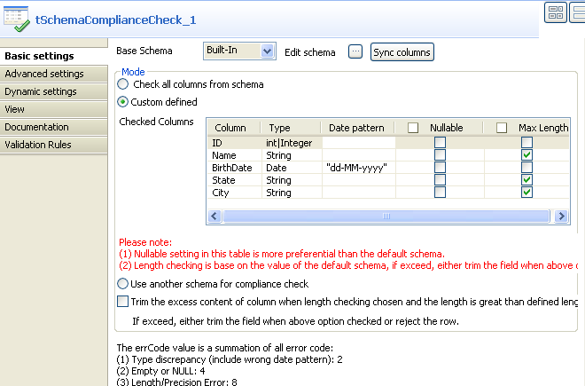

Famille de composant | Data Quality | |
Fonction | Ce composant valide toutes les lignes d’entrée en fonction du schéma de référence ou vérifie les types, la nullabilité, la longueur de la ligne en fonction des valeurs de référence. Cette validation peut être appliquée à l’ensemble des lignes ou une partie seulement. | |
Objectif | Le tSchemaComplianceCheck permet d’assurer la qualité des données de n’importe quelle source de données en les comparant aux données de référence. | |
Basic settings | Base Schema et Edit schema | Un schéma est une description de lignes, il définit le nombre de champs qui sont traités et passés au composant suivant. Le schéma est soit local (Built-in) soit distant dans le Repository. Définissez la structure et la nature des données à traiter. Si vous utilisez Talend Open Studio for Big Data, seul le mode Built-in est disponible. |
|
| Built-in : Le schéma est créé et conservé pour ce composant seulement. Voir également le Guide utilisateur de Talend Open Studio. |
|
|
|
Repository : Le schéma existe déjà et est stocké dans le Repository. Ainsi, il peut être réutilisable dans divers projets et Job designs. Voir également le Guide utilisateur de Talend Open Studio. |
| Check all columns from schema | Cochez cette option si vous souhaitez effectuer la vérification sur toutes les colonnes du schéma de base. |
Custom defined | Cochez cette option si vous souhaitez effectuer la vérification sur des colonnes en particulier. Lorsque cette option est cochée, le tableau Checked Columns apparaît. | |
| Checked Columns | Définissez dans ce tableau quelles sont les vérifications à effectuer, et sur quelles colonnes. |
|
| Column : Affiche les noms des colonnes. |
|
| Type : sélectionnez les propriétés que les données doivent avoir. Cette validation est obligatoire pour toutes les colonnes. Pour effectuer cette vérification sur toutes les colonnes, cochez la case d’en-tête du tableau. |
| Date pattern : Définissez le format de date souhaité sur chaque colonne avec le type de données Date. | |
| Nullable : Cochez la case de la colonne que vous souhaitez définir comme colonne nullable, afin de permettre aux lignes vide dans cette colonne de se diriger vers le flux de sortie sans tenir compte du schéma de base défini. Pour définir toutes les colonnes comme nullables, cochez la case d’en-tête du tableau. | |
|
Undefined or empty : Cochez la case de la colonne dont vous souhaitez rejeter les lignes vides, alors que la colonne n'est pas nullable dans la définition du schéma de base. Pour effectuer cette vérification sur toutes les colonnes, cochez la case au niveau de l'en-tête de la table. | ||
|
| Max length : Cochez la case de la colonne dont vous souhaitez vérifier la longueur des données en fonction de la longueur définie dans le schéma de base. Pour effectuer cette vérification sur toutes les colonnes, cochez la case d’en-tête du tableau. |
| Use another schema for compliance check | Définissez un schéma de référence en donnant aux données les propriétés qu’elles sont censées avoir. Ainsi, les données non conformes seront rejetées. Ces propriétés peuvent correspondre au type de données, aux valeurs nulles, et/ou à la longueur des données. |
|
Trim the excess content of column when length checking chosen and the length is greater than defined length |
Cochez cette case afin de tronquer les données dépassant la longueur spécifiée plutôt que de les rejeter. L'option fonctionne avec les trois modes du tSchemaComplianceCheck. NoteCette option s'applique unqiuement aux données de type String. | |
| Advanced settings |
tStatCatcher Statistics |
Cochez cette case pour collecter les données de log au niveau du composant. |
Use Fastest Date Check | Cochez cette case afin d’effectuer une vérification rapide du format de date en utilisant la méthode TalendDate.isDate() de la routine système TalendDate lorsque Date pattern (format de date) n’est pas défini. Pour plus d’informations concernant les routines, consultez le Guide utilisateur de Talend Open Studio. | |
Treat all empty string as NULL | Cochez cette case afin de traiter tous les champs vides de chaque colonne comme des valeurs nulles, plutôt que comme des chaînes de caractères vides. Cette case est cochée par défaut. Lorsqu’elle est décochée, le tableau Choose Column(s) s’affiche pour vous permettre de sélectionner les colonnes que vous souhaitez. | |
Utilisation | Ce composant est un composant intermédiaire permettant d’exclure les données non conformes du flux principal. Ce composant ne peut être utilisé comme composant de début puisqu’il requiert un flux d’entrée. Il nécessite aussi au moins un composant de sortie afin de regrouper les flux validés et éventuellement un deuxième pour les données rejetées via un lien Rejects. Pour plus d’informations, consultez le Guide utilisateur de Talend Open Studio. | |
Ce scénario permet de vérifier le type, la nullabilité et la longueur des données du flux d’entrée en fonction du schéma de référence défini. Il permet également d'afficher les résultats de validation dans la console de la vue Run.
Le flux d’entrée provient d’un fichier csv simple contenant des données dont les propriétés ont un mauvais type, un mauvais id, dont les données sont supérieures à la longueur maximum, ou contenant des valeurs nulles dans les colonnes alors que celles-ci sont définies comme non nullables.
ID;Name;BirthDate;State;City 1;Dwight;06-04-2008;Delaware;Concord 2;Warren;25-10-2008;Montana 3;Benjamin;17-08-2008;Washington;Austin 4;Harry;14-04-2008;Kansas;Annapolis 5;Ulysses;2007-04-12;Michigan;Raleigh 6;James;19-08-2007;Delaware;Charleston .7;Bill;20-04-2007;Illinois;Bismarck 8;Ulysses;04-12-2008;;Saint Paul 9;Thomas;09-05-2008;Maryland;Albany 10;Ronald;11-02-2008;Florida;Hartford
A partir de la Palette, cliquez et déposez les composants suivants dans l’espace de modélisation graphique : tFileInputDelimited, tSchemaComplianceCheck, ainsi que deux composants tLogRow.
Cliquez-droit sur le tFileInputDelimited pour le connecter au composant tSchemaComplianceCheck via une connexion Row Main.
Cliquez-droit sur le composant tSchemaComplianceCheck et sélectionnez Row > Main pour le connecter au premier composant tLogRow. Ce flux de sortie ne contiendra que les données valides.
Cliquez-droit une deuxième fois sur le composant tSchemaComplianceCheck et cette fois sélectionnez Row > Rejects pour le connecter au second composant tLogRow. Cette deuxième sortie regroupera toutes les données non conformes. Il passe deux colonnes supplémentaires au composant suivant : ErrorCode et ErrorMessage. Ces deux colonnes en lecture seule fournissent des informations concernant les données rejetées afin de simplifier la gestion d'erreurs et la résolution de problèmes, si nécessaire.

Double-cliquez sur le composant tFileInputDelimited afin d’afficher sa vue Basic settings. Configurez ses propriétés, notamment le nom du fichier d'entrée et le nombre de lignes d'en-tête à ignorer.

Cliquez sur le bouton [...] à côté du champ Edit Schema pour décrire la structure de données de ce fichier d’entrée. Dans ce scénario, le schéma est composé de cinq colonnes : ID, Name, BirthDate, State et City.

Renseignez le champ Length des colonnes Name, State et City : respectivement 7, 10 et 10, puis cliquez sur OK pour fermer la boîte de dialogue et propager le schéma.
Double-cliquez sur le composant tSchemaComplianceCheck pour configurer les paramètres de validation.
Cochez l’option Custom defined dans la zone Mode pour effectuer des validations personnalisées. Dans cet exemple, le tableau Checked columns permet de configurer les paramètres de validations.
Cependant, vous pouvez aussi cocher la case Check all columns from schema si vous souhaitez vérifier tous les paramètres de toutes les colonnes (type, valeurs nulles et longueur), en fonction du schéma de base défini, ou encore cocher l’option Use another schema for compliance check et définir le schéma de la structure des données souhaité.
Dans le tableau Checked Columns, définissez les vérifications à effectuer. Pour ce scénario :
- Sélectionnez Int comme Type de données de la colonne ID.
- Cochez la case Length afin que les longueurs des colonnes Name, State et City soient vérifiées.
- Sélectionnez Date comme Type de données de la colonne BirthDate et dd-MM-yyyy comme Date pattern.
- Décochez la case Nullable afin que les valeurs nulles de toutes les colonnes soient vérifiées.
Note
Pour rejeter les champs dont les données sont supérieures à la longueur maximum définie, assurez-vous que la case Trim the excess content of column when length checking chosen and the length is greater than defined length est décochée.
Dans la vue Advanced settings du composant tSchemaComplianceCheck, cochez la case Treat all empty string as NULL afin de rejeter toutes les lignes contenant des champs vides.
Pour visualiser le résultat du processus de validation sous forme de tableau dans la console Run, double-cliquez sur chaque composant tLogRow et cochez la case Table dans leur vue Basic settings.